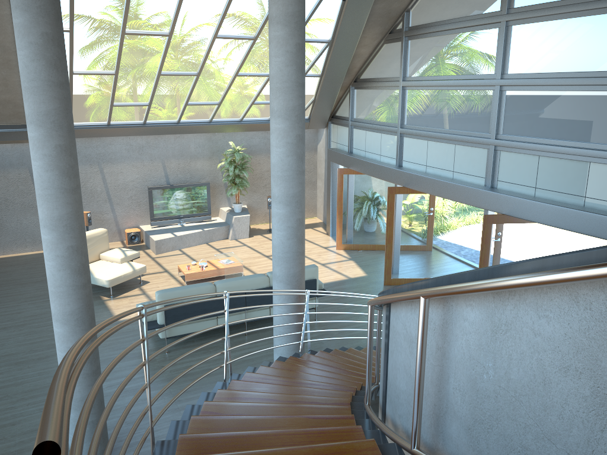
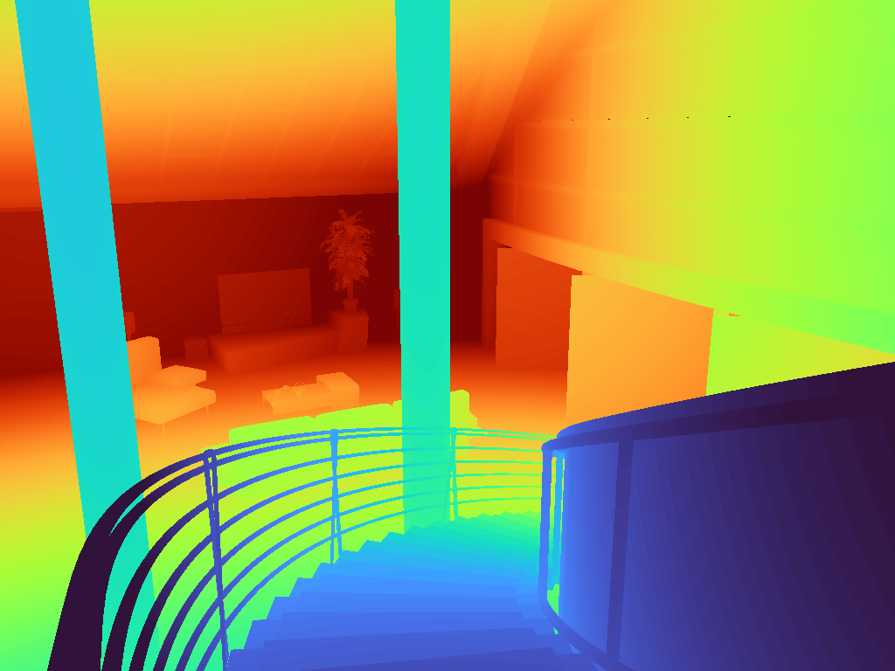
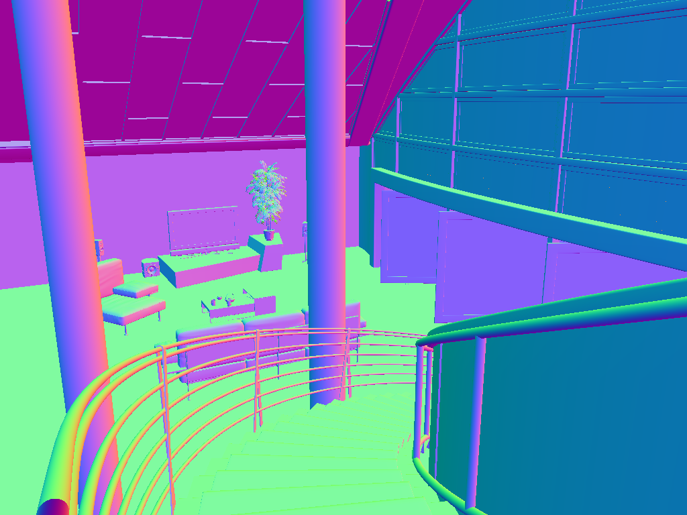
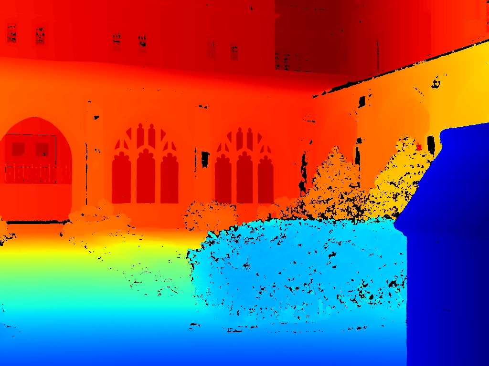
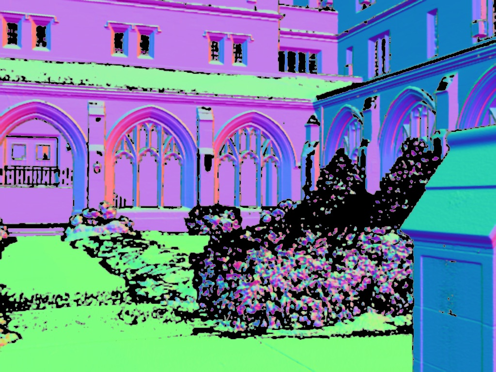

Indoor scenes rendered in 3D · 100 scenes randomly sampled from the full dataset of 461 scenes · HDF5 format.

RGB
Depth
NormalsThe 4M-21 model processes diverse visual modalities — RGB images, depth maps, surface normals, semantic segmentation — through a shared transformer encoder. We ask a direct empirical question: does the encoder actually learn a single unified representation, or do modality-specific features remain distinct throughout the trunk?
We measure representational similarity across all 12 encoder layers using CKA, PWCCA, and k-NN overlap, testing each observation against a permutation null distribution built from mismatched scene pairs. We find persistent, statistically significant convergence between paired modalities across deep encoder layers (CKA z ∈ [4.0, 5.5], all layers p < 0.02), corroborated by k-NN overlap and PWCCA. The pattern holds across all three modality pairs (RGB ↔ Depth, RGB ↔ Normals, Depth ↔ Normals) and across both Hypersim and DIODE.
Large multimodal models like 4M are trained to encode many modalities into one shared trunk. The design assumption is that representations converge: an RGB patch and the corresponding depth patch of the same scene end up nearby in latent space, with surface normals, segmentation maps, and other modalities folding into the same neighborhood.
This assumption is rarely tested directly. It is mostly inferred from downstream task performance, or from the model's ability to generate one modality conditioned on another. We make it empirical — opening the trunk and measuring, layer by layer, how similarly the encoder describes the same scene observed through different sensors.
Two threads of prior work motivate the question. The Platonic Representation Hypothesis argues that sufficiently scaled models converge to a shared world model independent of the surface form of their input. And CKA and related similarity probes have proven to be effective tools for unpacking representational structure inside deep networks. Combining them gives us a concrete way to ask whether 4M's "one trunk" is genuinely one.
RQ1. Across the 12 encoder layers of 4M-21, do paired activations from different modalities of the same scene cluster more tightly than activations from mismatched scenes — and if so, where in the network does this convergence emerge and persist?
4M-21 is a multimodal foundation model developed at EPFL VILAB. It uses a shared transformer encoder that processes all input modalities — images, depth, normals, and more — in a unified architecture. The encoder has 12 layers and a hidden dimension of 768 per token.
This shared design is the core assumption our project tests: does the encoder actually learn one representation for all modalities, or does it keep them separate?
Indoor scenes rendered in 3D · 100 scenes randomly sampled from the full dataset of 461 scenes · HDF5 format.

RGB
Depth
NormalsReal indoor and outdoor photographs · 25 scenes drawn from the official train and val splits · PNG/npy format.

Depth
NormalsBeyond encoding each modality separately, we also run joint forward passes where two modalities are fed into the encoder simultaneously. We test three regimes:
Click any step below for details.
To complement the scalar similarity metrics, we directly visualize the geometry of the activation space at each encoder layer using dimensionality reduction. We apply PCA to 50 components as a denoising step, then run t-SNE to produce a 2D or 3D embedding. Points represent individual token activations, colored by modality, scene category, or scene identity depending on the selected granularity. This lets us see whether modality identity, scene type, or individual scene is the dominant organizing principle in the encoder's representation space at each layer.
For every (layer, metric, modality-pair) combination we construct a null distribution by repeatedly pairing activations from different scenes (shuffling scene identities while keeping per-modality batches intact). The observed score is reported as a z-score against this null and tested at p < 0.05. Because we test 12 layers × 3 metrics simultaneously, we apply Benjamini–Hochberg FDR correction at the analysis level.
Before running the full similarity benchmark we explore what the 12 encoder layers look like from three complementary angles: the geometry of the activation space itself (t-SNE), the per-sample distance between paired modalities, and the spread of activations within each modality (entropy). Each view tells a slightly different story about where and how the modalities meet inside 4M-21.
We visualize the token activation space at each encoder layer using t-SNE (with PCA-50 pre-reduction for denoising), coloring points by modality, scene category, or scene identity. This directly reveals whether modality, scene type, or individual scene is the dominant axis of variation in the encoder's representation space at each layer — a question the scalar similarity metrics alone cannot answer.
[Placeholder — add interpretation once figures are injected.] Expected finding: at later layers, points cluster by modality rather than by scene, indicating that modality identity remains the dominant axis of variation in absolute geometry — even as CKA and k-NN show the cross-modal gap is smaller than chance would predict.
The t-SNE figures above show how each modality's whole cloud moves; here we measure the per-sample picture: for every image we compute the Euclidean distance between its two paired modality embeddings (in PCA-50 space) at each encoder layer. A shrinking distance over depth means a given image's representations under different sensors are being pulled together. We overlay the mean curve for the three modality pairs, and offer the per-pair box plots one click away.
For each encoder layer we bin the PCA-2 projection of one modality's activations into 60 bins and compute the Shannon entropy (in bits). Higher = the activations are more diffuse across the projection; lower = they concentrate into fewer cells. We plot the per-layer entropy curve for each modality of a pair separately, so the gap between the two curves measures whether 4M processes the two streams with similar complexity.
We analyzed three categories of modality pairs: (1) cross-modality pairs — separate forward passes comparing RGB, depth, and surface normals; (2) self-vs-joint pairs — the same modality fed alone vs. fed jointly with a partner, testing whether the partner shifts the representation; and (3) joint-vs-joint pairs — both slices from one shared forward pass, testing whether joint processing closes the cross-modality gap.
Do representations of the same scene become more similar across modalities as we go deeper into the encoder?
For each modality pair and dataset we also compute the per-condition peak across layers (table below). All three pairs peak at deep layers (L7–L11), confirming late-layer convergence, and DIODE consistently shows higher similarity than Hypersim for the same pair across every metric.
| Pair | Dataset | CKA | k-NN | PWCCA | CKA peak | k-NN peak | PWCCA peak |
|---|---|---|---|---|---|---|---|
| RGB ↔ Depth | Hypersim | 0.398 | 0.435 | 0.547 | L11 | L10 | L11 |
| DIODE | 0.695 | 0.434 | 0.541 | L11 | L10 | L11 | |
| RGB ↔ Normals | Hypersim | 0.203 | 0.214 | 0.410 | L11 | L10 | L11 |
| DIODE | 0.551 | 0.308 | 0.541 | L11 | L10 | L11 | |
| Depth ↔ Normals | Hypersim | 0.390 | 0.228 | 0.461 | L7 | L8 | L7 |
| DIODE | 0.622 | 0.338 | 0.584 | L7 | L10 | L7 |
Joint processing — feeding both modalities together in a single forward pass — meaningfully increases cross-modality similarity compared to separate passes. The gap is largest for RGB ↔ Normals (CKA +0.35 on Hypersim, +0.20 on DIODE) and RGB ↔ Depth (+0.12 on Hypersim, +0.09 on DIODE). By contrast, self-vs-joint pairs score near 1.0 (CKA ≈ 0.999–1.000), meaning a modality's representation is almost entirely unchanged by the presence of a partner — the encoder integrates information without disrupting individual modality representations.
| Joint-vs-joint pair | Hypersim CKA | DIODE CKA |
|---|---|---|
| RGB+Depth ↔ Depth+RGB | 0.518 | 0.783 |
| RGB+Normals ↔ Normals+RGB | 0.508 | 0.713 |
| Depth+Normals ↔ Normals+Depth | 0.615 | 0.699 |
The 4M encoder consistently forms unified representations across RGB, depth, and surface normals, with convergence peaking at deep layers across both Hypersim and DIODE — a pattern confirmed by all three similarity metrics (CKA, k-NN overlap, PWCCA). Joint processing further closes the cross-modality gap without disrupting individual representations, suggesting the encoder has a genuine capacity for multimodal integration, not just parallel processing. These findings support the model's design philosophy and connect to the Platonic Representation Hypothesis. The dataset gap (DIODE > Hypersim) warrants further investigation, and future work should extend the analysis to a Hypersim-specific segmentation tokenizer and to cross-modal decoding probes (RQ2).
Sample size and scene coverage. Our analysis uses ~100 Hypersim and 25 DIODE scenes — sufficient for robust estimates but not a full distributional characterization. Results may shift with larger samples, particularly for rarer scene categories.
Segmentation modality excluded. The only publicly released semseg tokenizer (tok_semseg) was trained on COCO-Stuff (134 classes), incompatible with Hypersim's NYU-40 label set. A Hypersim-specific tokenizer would be needed to include this modality.
Null distribution assumptions. Our permutation null pairs activations from mismatched scenes but preserves within-modality statistics. If scene-level structure is not the primary source of cross-modal correlation, the null may be conservative and z-scores inflated.
No causal interpretation. CKA and k-NN overlap measure statistical similarity, not causal alignment. High similarity does not imply that the encoder uses the shared representation for downstream tasks — that requires probing or intervention experiments (RQ2).